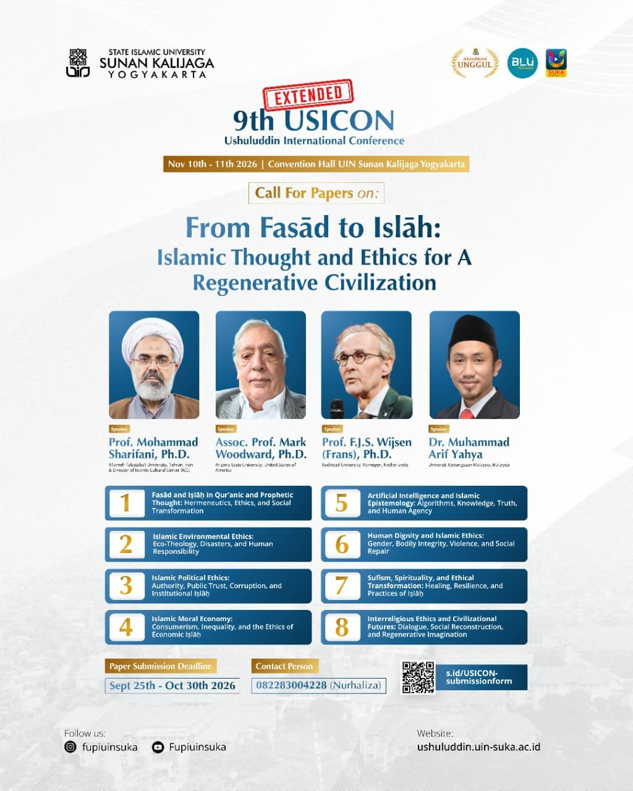

From Fasād to Iṣlāḥ: Islamic Thought and Ethics for a Regenerative Civilization
From corruption and ruin toward repair and renewal
The Faculty of Ushuluddin and Islamic Thought, UIN Sunan Kalijaga Yogyakarta, invites scholars, researchers, postgraduate students, and practitioners to the 9th Ushuluddin International Conference (USICON), held on November 10–11, 2026, at the Convention Hall of UIN Sunan Kalijaga Yogyakarta.
Our world is marked by ecological disasters, eroding public trust, violence against human dignity, economic inequality, and the growing power of algorithms over what people know and believe. This year's theme asks how Islamic thought and ethics can name these forms of fasād and shape practices of iṣlāḥ that heal, rebuild, and renew, toward a civilization that regenerates rather than depletes.
Papers are welcome from the Qur'anic and Prophetic sciences, theology, philosophy, Sufism, comparative religion, and the social sciences, as long as they engage one of the eight sub-themes.
Fasād فساد
Corruption, decay, and disorder, in the earth, in institutions, and in the human self.
Iṣlāḥ إصلاح
Repair, reconciliation, and reform: the ethical work of restoring what has been damaged.
Sub-themes
Submit a paper addressing one of the following eight sub-themes.
Fasād and Iṣlāḥ in Qur'anic and Prophetic Thought
Hermeneutics, Ethics, and Social Transformation
Islamic Environmental Ethics
Eco-Theology, Disasters, and Human Responsibility
Islamic Political Ethics
Authority, Public Trust, Corruption, and Institutional Iṣlāḥ
Islamic Moral Economy
Consumerism, Inequality, and the Ethics of Economic Iṣlāḥ
Artificial Intelligence and Islamic Epistemology
Algorithms, Knowledge, Truth, and Human Agency
Human Dignity and Islamic Ethics
Gender, Bodily Integrity, Violence, and Social Repair
Sufism, Spirituality, and Ethical Transformation
Healing, Resilience, and Practices of Iṣlāḥ
Interreligious Ethics and Civilizational Futures
Dialogue, Social Reconstruction, and Regenerative Imagination
Speakers

Prof. Mohammad Sharifani, Ph.D.
Allameh Tabataba'i University, Tehran, Iran & Director of Islamic Cultural Center (ICC)

Assoc. Prof. Mark Woodward, Ph.D.
Arizona State University, United States of America

Prof. F.J.S. Wijsen (Frans), Ph.D.
Radboud University, Nijmegen, Netherlands

Dr. Muhammad Arif Yahya
Universiti Kebangsaan Malaysia, Malaysia
Committees
The Scientific Committee oversees the academic quality of the conference and the peer review of submitted papers. The Steering and Organizing Committees are drawn from the Faculty of Ushuluddin and Islamic Thought, UIN Sunan Kalijaga Yogyakarta.
Scientific Committee
Responsible for review standards and the selection of papers
- Prof. Dr. Mohammad Sharifani, Ph.D.Allameh Tabataba'i University, Tehran, Iran
- Prof. Dr. Saifuddin Zuhri Qudsy, S.Th.I., M.A.UIN Sunan Kalijaga Yogyakarta, Indonesia
- Assoc. Prof. Mark Woodward, Ph.D.Arizona State University, United States of America
- Prof. Dr. Phil. H. Al Makin, S.Ag., M.A.UIN Sunan Kalijaga Yogyakarta, Indonesia
- Prof. Mahi Gandouz
- Prof. Dr. Inayah Rohmaniyah, S.Ag., M.Hum., M.A.UIN Sunan Kalijaga Yogyakarta, Indonesia
- Dr. Arif Yahya, M.Us.Universiti Kebangsaan Malaysia, Malaysia
Steering Committee
Faculty of Ushuluddin and Islamic Thought, UIN Sunan Kalijaga
- Prof. Dr. Robby Habiba Abror, M.Hum.
- Dr. Ahmad Salehudin, S.Th.I., M.A.
- Dr. Dian Nur Anna, M.A.
- Dr. Toufan Aldian Syah, M.E.
Editorial Team
Editors of the conference proceedings
- Dr. Dian Nur Anna, M.A.
- Dr. Toufan Aldian Syah, M.E.
- Fendi Utomo, S.Hum., M.A.
- Aswar, M.Ag.
Organizing Committee
Faculty of Ushuluddin and Islamic Thought, UIN Sunan Kalijaga
- Chairperson
- Miftakhus Sifa' Bahrul Ulumiyah, S.Hum., M.Ag.
- Secretary
- Fendi Utomo, S.Hum., M.A.
- Treasurer
- Rofiqoh, S.Ag.
- Paper Publication
- Muhammad Aska Irfani, M.Ag. · Aswar, M.Ag.
- Ceremonies, Presentations & Events
- Slamet Makhsun, S.Ag. · Fachrul, S.Ag. · Putri Nurul Faizah, S.Ag. · Hannan, S.Ag.
- Website Development
- Abdul Qawwiy Nasrun, S.Ag.
Important Dates
Full papers in English via the USICON OJS, plus the registration form.
Selected papers are invited to present. Authors will be notified by the committee.
Convention Hall, UIN Sunan Kalijaga Yogyakarta.
Paper Requirements
- Papers must be written in English.
- Papers must follow the author guidelines and template.
- All papers must be submitted through the USICON OJS.
- Participants must complete the designated Google Form at s.id/USICON-submissionform.
- The best papers will be selected for presentation and for publication in the proceedings of a reputable international publisher, subject to the publisher's editorial review and requirements, including additional fees where applicable.
Author Guidelines
Prepare your paper with the official USICON template before uploading it to the OJS.
Abstract
- Written in English, 250–300 words
- Up to 5 keywords
Full paper
- Written in English, based on research or conceptual work within the conference scope
- Structured with the IMRaD model
- Original, and not published or under review elsewhere
- 6,000–8,000 words, A4, Garamond, 1.5 line spacing
- Author names without academic degrees or titles; include affiliation, email, and correspondence address
References
- Chicago Manual of Style (full-note footnotes)
- Managed with Mendeley or Zotero
- Arabic terms follow the transliteration guide in the template
There is no registration fee for participants of the 9th USICON 2026. Publication in the proceedings may carry a separate fee set by the publisher.
Peer Review & Publication Ethics
Selected papers from the 9th USICON will be submitted for publication in the proceedings of a reputable international publisher. Every paper goes through the following process.
- Initial screeningThe editorial team checks scope, compliance with the template, and originality using similarity-detection software.
- Main editors reviewEach paper is reviewed by the main editors (volume editors) of the proceedings, drawn from the Editorial Team and the Scientific Committee.
- AssessmentThe editors assess relevance to the theme, originality, methodological soundness, ethical compliance, and clarity.
- RevisionAuthors revise the paper based on the editors' comments and resubmit it via the OJS.
- Final decisionThe Scientific Committee and the editors decide which papers are accepted for presentation and the proceedings.
Publication ethics
USICON follows the Committee on Publication Ethics (COPE) guidelines. Plagiarism, data fabrication or falsification, duplicate submission, and redundant publication are grounds for rejection or retraction. Research involving human participants or sensitive data must state ethics approval or exemption where applicable.
Use of AI tools
Authors must disclose any use of generative AI tools in preparing the manuscript and remain fully responsible for its content. AI tools cannot be listed as authors. Editors must not upload manuscripts under review to AI tools.
Originality and copyright
Submitted papers must be original and not published or under review elsewhere. Accepted papers are published open access under the license set by the publisher, and authors retain copyright.
Conflicts of interest
Editors must declare any conflict of interest and withdraw from reviewing papers by colleagues, collaborators, or students. Papers by committee members are handled by an editor with no conflict.
Previous USICON
USICON has been held annually by the Faculty of Ushuluddin and Islamic Thought since 2017. Proceedings of earlier editions are published online (ISSN 2746-3850).
Where to find us
Convention Hall UIN Sunan Kalijaga
Jl. Laksda Adisucipto, Papringan, Caturtunggal, Depok, Sleman, Daerah Istimewa Yogyakarta
November 10–11, 2026
Contact Person
Nurhaliza (WhatsApp)
0822-8300-4228Email: usicon@uin-suka.ac.id

Official flyer
Share the call for papers with colleagues and students. Open the full-size flyer to save or forward it.